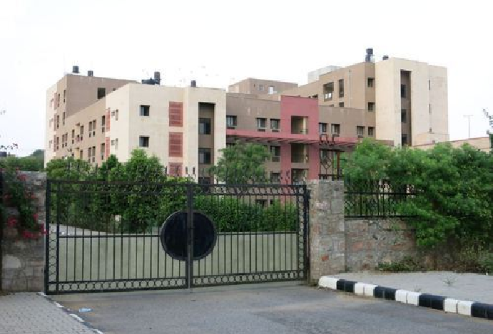
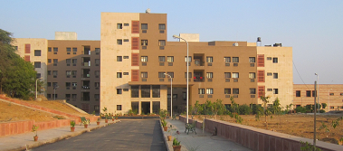
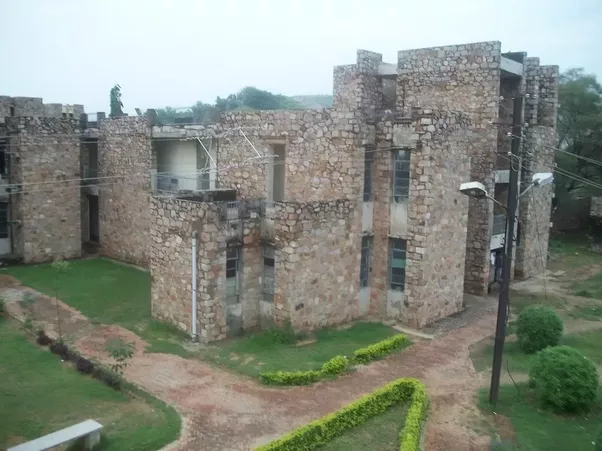

Indian Institute of Information Technology, Kota (IIIT, Kota) is an institute of national importance.
IIIT Kota is a joint venture of the Ministry of Human Resource Development (MHRD) Govt. of India and Govt. of Rajasthan with Industry Partners in Public-Private-Partnership (PPP) mode.
IIIT, Kota was established in 2013. Currently the institute is mentored by Malaviya National Institute of Technology Jaipur (MNIT Jaipur) and situated at MNIT Jaipur.
The main site of IIIT, Kota shall be constructed at Ranpur near Kota on 100.37 acres of land made available by the Govt. of Rajasthan.
Functional Structure
The functional structure of IIIT, Kota consists of (i) Governing Body (ii) Finance Committee (iii) Building and Works Committee (iv) Academic Senate. The institute has the following four supportive and active Industrial Partners as envisioned in the mission and vision of the Institute.
Currently IIIT KOTA offer B.Tech in the discipline of Computer Science & Engineering and Electronics & Communication Engineering only.
Hostels:-
The Insitute has excellent hostel facilities for all the students.
IIIT Kota are accomodated along with MNIT's students and no discrmination between facilities.
Hostels are provided with 24x7 internet facility.
All hostel students are completely free to move around the campus at all times, and CC are open 24x7 for the benefit of students.



Facility :-
Campus :
IIIT, Kota does not have its own building, as of now it is being operated from the premises of mentor institute i.e. Malaviya National Institute of Technology.
The Mnit Jaipur campus provides students with all essential amenities for community living like
staffclubs, hospital, post office, community center, gymnasium, playing fields, guest houses, and
canteen, etc.
Library:
The Institute has a spacious and well-equipped library with a collection of about 1,33,600
volumes
of books, periodicals, reports and reference material.
Canteen:
It provides refreshments to all the students and the staff during and beyond the working
hours.
Sports:
There are adequate facilities available for sports, indoor-outdoor games and co-curricular
activities.
Medical Facilities:
A full-fledged Dispensary is available on the campus. It is supervised by a residential Medical
Officer.
Bank and Post-Office:
There is a branch of the ICICI Bank at the campus to meet the needs of all the students staying
at
the hostel. There is a Post Office as well inside the campus of MNIT.
Placements:-
The placement of IIIT Kota is done with the MNIT, Jaipur. The companies coming in MNIT Jaipur allow IIIT Kota students to sit for the placements.
The T&P cell collaborates with leading organizations for setting up internship and training program of students.
The Office interacts with many companies/industries in the country, of which nearly 200 companies visit the campus for holding campus interviews.
These organizations which approach the institute come under the purview of: Core Engineering Industries, IT & IT enabled services, Manufacturing, Consultancy Firms, Investment & Finance Companies, Management Organisations, R & D laboratories.
Job offers, dates of interviews, selection of candidates etc. are announced through the Training & Placement Office.